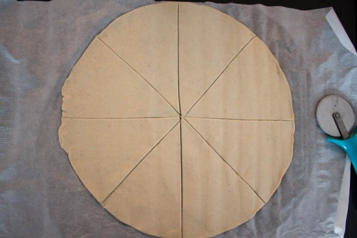
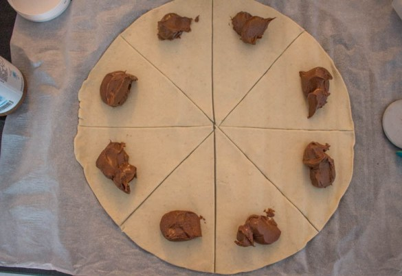
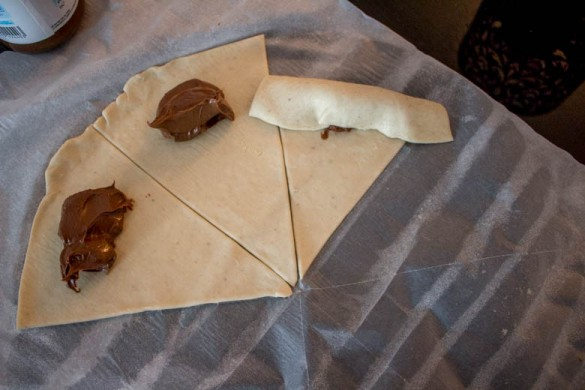
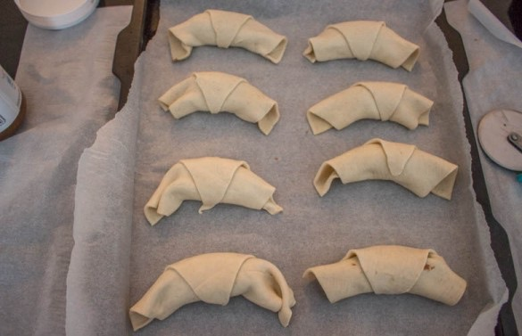

Mini croissants apéro au saumon

Hello tout le monde! Aujourd’hui je vous retrouve avec une idée pour l’apéritif! Fêtes ou pas fêtes moi j’adore préparer ces minis croissants au saumon !
J’ai hésité longtemps avant de choisir quelle recette j’allais publier aujourd’hui (car oui j’en ai un bon paquet à publier)! Dans une semaine, c’est le réveillon de noël et je me suis dit que ces mini croissants seraient les bienvenus à une semaine du jour J pour en dépanner quelques-uns en manque d’idées (même si je doute qu’ils y en aient encore qui manque d’idées à J-7). Ici, on est des adeptes des mini croissants à la pâte a tartiner à l’heure du goûter mais depuis quelques temps la version salée nous a convaincu alors on teste un peu tous les mélanges possibles.
A l’occasion des fêtes, j’ai choisi de vous présenter le classique combo saumon-fromage frais et aneth qui remporte généralement un franc succès en cette période de l’année. J’ai fait la version avec du saumon fumé et la version comme ici avec du saumon frais et si vous aussi vous hésitez je vous conseille la version avec du saumon frais! J’étais moi même peu convaincue au départ mais une fois les mini croissants sortis du four et refroidis je peux vous dire que je n’ai pas hésité à choisir mon préféré. Avec une farce aussi simple que celle-ci où le saumon est clairement un élément principal je trouve que le saumon frais est bien plus présent lors de la dégustation alors que le saumon fumé est un peu trop écrasé par la pâte feuilletée qui prend le dessus (à vous de testez ce n’est que mon avis!).
Cuisiner du saumon est devenu une question délicate avec tout ce que l’on peut voir; lire et entendre dans les différents médias. Je n’aime pas du tout débattre de ce genre de sujet sur le blog car chacun est libre de faire ce qu’il veut (surtout que nous vivons dans une ère où nous sommes suffisamment sensibilisés) mais si j’avais un petit conseil à vous donner ce serait d’éviter les saumons de Norvège et de préférer les saumons d’Écosse ou d’Irlande (là encore ce n’est que mon avis, je ne suis personne pour vous dire ce que vous devez consommer ou pas). Celui que j’utilise dans cette recette vient d’Irlande et est issu de l’agriculture biologique (vous le trouverez chez Bonneterre).
Si vous avez déjà votre menu pour le réveillon de Noël vous pourrez faire ces minis croissant au saumon pour le 31/12 ou pour n’importe quel apéro entre amis ça fonctionne aussi!
Ingrédients
- Pâte feuilletée - 1
- Pavé de saumon - Environ 150g
- Sel, poivre
- Aneth, ciboulette - quelques brins
- Fromage frais - 125g
- Jus de citron - 1 càc
- Oeufs - 1 jaune pour la dorure
Instructions
- Préchauffez le four à 180°c Enlevez la peau du saumon (si vous utilisez du saumon frais) Découpez-le en petits morceaux Mélangez le fromage frais, le citron et les herbes aromatiques finement ciselées Goûtez, salez, poivrez à votre convenance Déroulez la pâte feuilletée Divisez-la en 8 triangles(ou en 16) comme sur la photo
- Préchauffez le four à 180°c
- Enlevez la peau du saumon (si vous utilisez du saumon frais)
- Découpez-le en petits morceaux
- Mélangez le fromage frais, le citron et les herbes aromatiques finement ciselées
- Goûtez, salez, poivrez à votre convenance
- Déroulez la pâte feuilletée
- Divisez-la en 8 triangles(ou en 16) comme sur la photo
- Déposez du fromage frais et du saumon au bords de chaque triangle (comme la photo ci-dessus).
- Roulez-les sur eux-mêmes de façon à former des croissants
- Déposez-les sur une plaque à pâtisserie préalablement recouverte de papier sulfurisé
- Dorez chaque croissant avec un jaune d’œufs et parsemez de graines de sésame ou de graines de courges avant d’enfourner
- Enfournez à 180°C pendant 10-12 minutes les croissants doivent ressortir dorés
- Laissez tiédir avant de servir
- Se sert tiède ou froid en apéro ou lors d'un brunch!




Les tips de la communauté
Miniatures pâtissières impressionnantes avec une présentation soignée. L'auteure offre des conseils pour adapter la recette à différentes utilisations.
Astuces
- Peut être accompagné de saumon fumé
- La sauce au fromage frais s'adapte à plusieurs présentations et utilisations
Variantes suggérées
- Avec saumon fumé à la place du saumon frais
- Avec d'autres garnitures à l'intérieur
Ajustements signalés
- tester!! Bonne journée 🙂